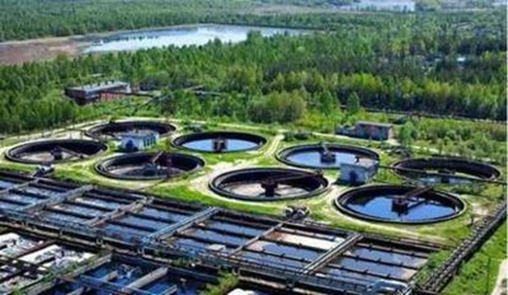
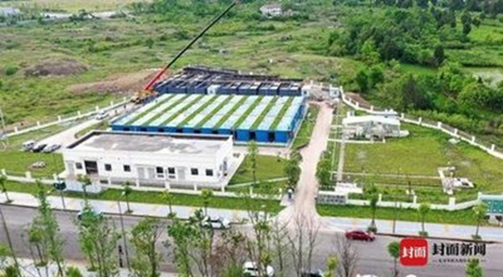
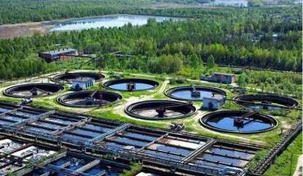
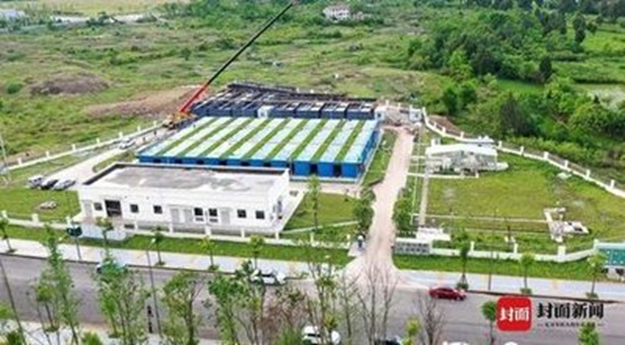

生态系统结构与功能保护
A. 加强河湖岸线修复
河湖岸修复方式主要有退耕还湖，划分生态缓冲带等，为河岸创造良好的生态环境。
B. 促进生态廊道建设
长江是众多物种生存的水域，许多鱼类洄游也会经过此地，所以主要方法有生态系统连通性恢复（如拆除不合理的拦河坝）
卡片：（洄游是鱼类在系统发生过程中形成的一种特征，是鱼类对环境的一种长期适应，它能使种群获得更有利的生存条件，更好地繁衍后代。）
C. 实施生态工程
如植被恢复、土壤改良等，提升生态系统的稳定性和服务功能。
卡片：（生态系统服务是指人类从生态系统获得的所有惠益，包括供给服务（如提供食物和水）、调节服务（如控制洪水和疾病）、文化服务（如精神、娱乐和文化收益）以及支持服务（如维持地球生命生存环境的养分循环）。）
生物多样性保护与恢复
1. 旗舰物种保护计划
制定并实施针对长江江豚、中华鲟等旗舰物种的保护计划，包括栖息地保护、种群监测等。
卡片：（中华鲟生命周期较长，最长寿命可达40龄。是中国一级重点保护野生动物，也是活化石，有“水中大熊猫”之称。分布于中国、日本、韩国、老挝和朝鲜。主要分布于中国长江干流金沙江以下至入海河口，其他水系如赣江、湘江、闽江、钱塘江和珠江水系均偶有出现。）
2. 鱼类资源恢复
实施禁渔制度，建设鱼类增殖放流站，恢复鱼类种群数量。
3. 生物多样性监测网络
建立生物多样性监测网络，定期评估物种丰富度、群落结构等生态指标。
水资源管理与保护
1. 水资源统一调度
建立跨流域、跨行政区域的水资源统一管理和调度机制，确保水资源的合理分配。
2. 节水型社会建设
推广节水技术和产品，提高水资源利用效率，建设节水型社会。
3. 水安全保障体系
加强饮用水水源地保护，建立水质监测预警系统，确保人民群众饮水安全。
卡片：（水是生命之源，人类在生活和生产活动中都离不开水，生活饮用水水质的优劣与人类健康密切相关。随着社会经济发展、科学进步和人民生活水平的提高，人们对生活饮用水的水质要求不断提高，饮用水水质标准也相应地不断发展和完善。）
水污染防治与治理
1. 工业废水治理
加强对工业企业的监管，确保废水达标排放，推广清洁生产技术。
卡片：（工业废水种类繁多，成分复杂。例如电解盐工业废水中含有汞，重金属冶炼工业废水含铅、镉等各种金属，电镀工业废水中含氰化物和铬等各种重金属，石油炼制工业废水中含酚，农药制造工业废水中含各种农药等。）
2. 农业面源污染治理
推广生态农业，减少化肥农药使用量，实施农田退水净化工程。
卡片：（生态农业——是指在保护、改善农业生态环境的前提下，遵循生态学、生态经济学规律，运用系统工程方法和现代科学技术，集约化经营的农业发展模式，是按照生态学原理和经济学原理,运用现代科学技术成果和现代管理手段,以及传统农业的有效经验建立起来的，能获得较高的经济效益、生态效益和社会效益的现代化农业。）
3. 城乡生活污水治理
完善城乡污水处理设施，提高污水处理率，推广中水回用技术。
 



土壤与固废污染防治
1. 土壤污染调查与修复
开展沿江土壤污染调查，实施污染地块修复工程，防止土壤污染对水体造成影响。
2. 固废安全处置
加强工业固废、危险废物的安全处置与资源化利用，建设危废处置中心。
3. 垃圾分类与回收
推广垃圾分类制度，提高垃圾回收利用率，减少固废对环境的污染。
卡片：（垃圾分类的目的是提高垃圾的资源价值和经济价值，减少垃圾处理量和处理设备的使用，降低处理成本，减少土地资源的消耗，具有社会、经济、生态等几方面的效益。）
生态修复技术创新与应用
1. 技术研发与推广
加大生态修复技术研发力度，推广成熟的技术和模式。
2. 示范项目建设
建设生态修复示范项目，展示新技术、新方法的应用效果。
卡片：（宁夏新闻网讯（记者 倪金凤）5月13日，财政部公示2024年历史遗留废弃矿山生态修复示范工程项目竞争性选拔结果，“宁夏黄河上游风沙区历史遗留废弃矿山生态修复示范工程项目”榜上有名，将获得3亿元中央财政补助资金支持，其中石嘴山市争取资金1.3亿元。 2023年11月，财政部、自然资源部联合印发《财政部办公厅自然资源部办公厅关于组织申报2024年历史遗留废弃矿山生态修复示范工程项目的通知》，石嘴山市高度重视，组织市财政局、自然资源局等部门成立联合专家组，全力以赴开展项目申报工作。 宁夏黄河上游风沙区历史遗留废弃矿山生态修复示范工程项目主要划分为贺兰山生态屏障、平原绿洲、毛乌素沙地防风固沙和中部干旱带荒漠化治理共4个生态修复单元，生态修复总面积5.54万亩，修复废弃矿山图斑209个（面积2.6万亩），包含银川、吴忠、石嘴山3个地级市共18个子项目，计划总投资5.04亿元。 石嘴山市作为该项目的重要组成部分，主要包含大武口区、惠农区和平罗县，涵盖贺兰山生态屏障、平原绿洲和毛乌素沙地防风固沙3个生态修复单元共计6个子项目，计划投资1.71亿元，其中争取中央、自治区补助资金1.3亿元。该项目通过对贺兰山生态屏障、平原绿洲、毛乌素沙地防风固沙和中部干旱带荒漠化治理等生态修复单元的系统性治理，进一步强化项目区抵御风沙、保持水土、维护生物多样性等能力，提升区域生态服务功能，筑牢祖国西北重要生态安全屏障，实现宁夏回族自治区党委十三届五次全会提出的到2027年实现废弃矿山动态“清零”目标。项目的实施将完成生态修复面积1.52万亩，植被恢复面积0.52万亩，修复废弃矿山图斑32个（面积0.37万亩），有效解决项目区内历史遗留矿山生态破坏 ）
3. 产学研合作
加强科研机构、高校与企业之间的合作，推动科研成果的转化和应用。
政策法规与制度建设
1. 完善法律法规
修订和完善长江保护相关法律法规，明确保护责任主体和监管机制。国务院下发总指令后，各地政府需要进一步将责任细分，明确。
2. 制定标准规范
制定更加严格的生态环境保护标准和排放标准，加强环境执法力度。
3. 加强政策引导
出台激励政策，鼓励企业和个人参与长江保护工作。
生态文化教育与传播
1. 生态文化保护
挖掘和传承长江生态文化，保护历史文化遗产。
2. 生态教育普及
将生态教育纳入国民教育体系，提高公众的生态意识和环保素养。
3. 传播生态理念
通过媒体、网络等渠道传播生态理念，营造良好的社会氛围。
跨区域协作与联防联控
1. 建立协作机制
加强长江流域各省市之间的协作与配合，共同应对跨区域的生态环境问题。
卡片：（全面推行河长制，是以保护水资源、防治水污染、改善水环境、修复水生态为主要任务，全面建立省、市、县、乡四级河长体系，构建责任明确、协调有序、监管严格、保护有力的河湖管理保护机制，为维护河湖健康生命、实现河湖功能永续利用提供制度保障。）
2. 实施联防联控
建立信息共享、联合执法和协同治理的联防联控机制。
3. 推动区域合作
加强区域间的合作与交流，共同推进长江大保护工作。
智慧环保系统建设
1. 构建信息平台
利用大数据、云计算等技术构建智慧环保系统平台。
2. 实现智能监测
实现环境监测数据的实时采集、传输和分析处理。
3. 提升应急响应能力
建立智能预警和应急响应系统，提高环境突发事件的应对能力。
卡片：（环境水质应急监测是为了迅速了解污染事故后水质受污染的状况;根据数据预测水质未来(短期)变化;根据水质恶化的程度，确定水质警戒级别及相应的安全保障预案(紧急状态)，防止发生由于水污染带来的人身伤害事故;根据水质变化情况，实时优化和调整应急处置措施，在保证安全的情况下尽早回复正常状态，以尽可能的减少污染事故带来的经济损失。）
生态补偿与激励机制
1. 完善生态补偿机制
明确生态补偿的主体、对象和方式，确保补偿资金的有效使用。
卡片：（生态补偿应包括以下几方面主要内容： 一是对生态系统本身保护（恢复）或破坏的成本进行补偿； 二是通过经济手段将经济效益的外部性内部化； 三是对个人或区域保护生态系统和环境的投入或放弃发展机会的损失的经济补偿； 四是对具有重大生态价值的区域或对象进行保护性投入。）
2. 制定激励政策
出台税收减免、资金补贴等激励政策，鼓励社会资本参与长江保护项目。
3. 加强监管评估
对生态补偿和激励政策的实施效果进行监管。
加强执法监管与违法惩处
1. 加大执法力度
加强生态环境执法队伍建设，提高执法水平和效率，确保各项环保法律法规得到有效执行。
2. 严格违法惩处
对破坏长江生态环境的违法行为实行“零容忍”，依法严惩，形成强大的震慑力。
3. 公开透明执法
推动执法过程公开透明，接受社会监督，确保执法公正、公平、公开。
社会参与与公众监督
1. 提升公众意识
通过宣传教育、媒体传播等方式，提升公众对长江保护的认识和参与度。
卡片：（长江保护与每个人息息相关，大家要积极参与哦。）
2. 建立举报奖励制度
鼓励公众积极举报破坏长江生态环境的违法行为，对举报有功者给予奖励。
3. 加强社会组织合作
与非政府组织、环保志愿者团体等社会组织建立合作关系，共同推动长江保护工作。
持续监测与评估
1. 建立监测网络
构建覆盖长江流域的生态环境监测网络，实现数据共享和互联互通。
卡片：（生态监测的任务：对区域内珍贵的生态类型包括珍稀物种在不同人类活动影响下的生态问题进行动态监测。监测人类生产活动对生态系统的组成、结构和功能的影响变化。由于化学污染物的蓄积特性，这些污染物对人类健康构成潜在威胁。监测社会生态系统的恢复活动，利用恢复生态学的原理来改善或恢复受害生态系统的状态。对监测数据进行处理和分析，研究生态系统的结构、功能、动态和可持续利用，为重大决策提供科学依据。）
2. 定期评估效果
定期对长江保护工作的效果进行评估，总结经验教训，及时调整和完善保护措施。
3. 发布评估报告
将评估结果以报告形式向社会公开，接受公众监督，增强长江保护工作的透明度和公信力。